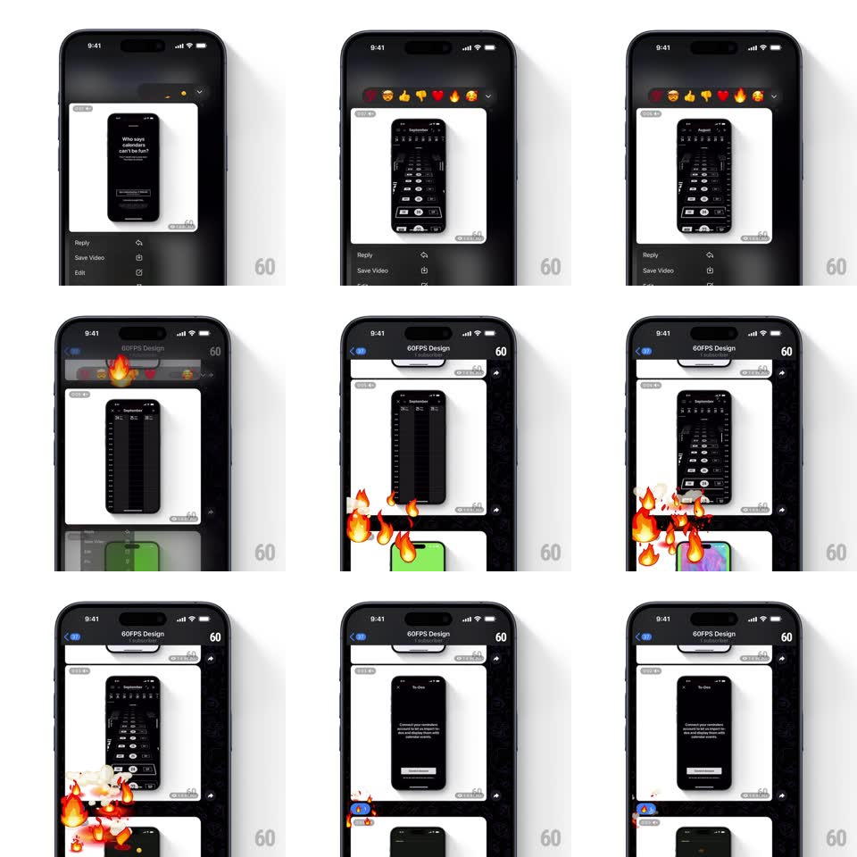

Media
Frame-by-frame

Rebuild this interaction 1:1: Telegram's emoji reactions - long-press a message for the context menu with a reaction bar on top, pick an emoji, and a full-screen animated effect (flames for fire, etc.) erupts from the message while the reaction badge lands on its corner.

Rebuild this interaction 1:1: Telegram's emoji reactions - long-press a message for the context menu with a reaction bar on top, pick an emoji, and a full-screen animated effect (flames for fire, etc.) erupts from the message while the reaction badge lands on its corner. ## Integration Integration: stack-agnostic spec - springs given as stiffness/damping, timed motions as duration + curve; map every value to your framework and animation library of choice. ## Scene Dark chat with image messages. Long-press: backdrop dims, the message lifts, a menu (Reply, Save Video, Edit...) rises below it, and a floating bar of big emoji sits above. After picking fire: full-screen flame effects sweep the chat, and a small reaction chip pins to the message's lower corner. ## Motion spec Pattern: reaction bar + full-screen celebration effect. - Long-press: message scales 1.03 with haptic thump; the emoji bar drops in above it (scale 0.6 -> 1, spring ~380/16), each emoji staggering in 30ms apart with its own overshoot. - Hover-drag across the bar: the emoji under the finger magnifies (scale 1.4, spring ~420/16) while neighbors shrink slightly - a loupe of feelings. - Selection: the chosen emoji rockets from the bar to the message's corner (300ms, arc path, springy land) as bar and menu collapse (200ms). - The full-screen effect fires: dozens of the emoji (flames) burst from the message outward (radial initial velocity, gravity, scale + rotation variance, ~1.6s life), drifting across the whole chat before dissipating. - The reaction chip counts up (digit roll) if others reacted. ## Calibration - The screen-filling effect plays once per fresh reaction - repeats of the same emoji just tick the counter. - The effect renders behind the app bar - chrome stays usable throughout. ## Reduced motion Chip appears with a fade; no full-screen effect. ## Don't miss - The emoji's flight from bar to badge - the reaction physically travels to the message. - The effect originates AT the message - it's the message that's on fire, not the screen.